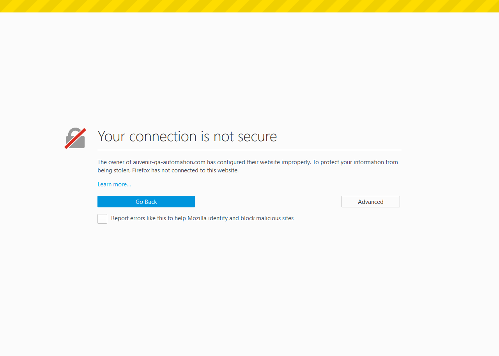

The following table lists down the Sequential Steps during the Run
TestCase Name: verifySupportPage : Iteration 1
Time Taken for Executing: 216 Milli Sec
Current Run Number: Run 0 Method Type: Test Method
TestCase Name: verifySupportPage : Iteration 1
Time Taken for Executing: 216 Milli Sec
Current Run Number: Run 0 Method Type: Test Method
Execution Platform Details
| O.S | : | Windows 10, amd64Bit, v10.0 |
| Java | : | 1.8.0_131 |
| Hostname | : | TT-PC-068 |
| Selenium | : | 3.3.1 |
Summary
| Status | : | Failed |
| Execution Date | : | 26-Jun-2017 04:56:37 |
| Browser | : | firefox,firefox |
Author Info
| Author Name | : | Unknown |
| Creation Date | : | Unknown |
| Version | : | Unknown |
| System User | : | tan.pham |
| S.No | Step Description | Input Value | Expected Value | Actual Value | Time | Line No | Status | Screen shot |
|---|---|---|---|---|---|---|---|---|
| 1 | Testscript Failed | 5 Sec | 40 |  |  |
{kind=link}
Reason for Failure: WebDriver Exception{moz:profile=C:\Users\TAN~1.PHA\AppData\Local\Temp\rust_mozprofile.dlRDLALxEpAk, rotatable=false, timeouts={implicit=0, pageLoad=300000, script=30000}, pageLoadStrategy=normal, platform=ANY, specificationLevel=0, moz:accessibilityChecks=false, acceptInsecureCerts=false, browserVersion=53.0.3, platformVersion=10.0, moz:processID=14060, browserName=firefox, platformName=windows_nt
Click Me to Show/Hide the Full Stack Trace
org.openqa.selenium.WebDriverException:
Build info: version: '3.3.1', revision: '5234b325d5', time: '2017-03-10 09:10:29 +0000'
System info: host: 'TT-PC-068', ip: '172.16.10.92', os.name: 'Windows 10', os.arch: 'amd64', os.version: '10.0', java.version: '1.8.0_131'
Driver info: org.openqa.selenium.firefox.FirefoxDriver
Capabilities [{moz:profile=C:\Users\TAN~1.PHA\AppData\Local\Temp\rust_mozprofile.dlRDLALxEpAk, rotatable=false, timeouts={implicit=0, pageLoad=300000, script=30000}, pageLoadStrategy=normal, platform=ANY, specificationLevel=0, moz:accessibilityChecks=false, acceptInsecureCerts=false, browserVersion=53.0.3, platformVersion=10.0, moz:processID=14060, browserName=firefox, platformName=windows_nt}]
Session ID: cc854db2-62b0-4dde-afe5-07dbe3013809
at sun.reflect.NativeConstructorAccessorImpl.newInstance0(Native Method)
at sun.reflect.NativeConstructorAccessorImpl.newInstance(NativeConstructorAccessorImpl.java:62)
at sun.reflect.DelegatingConstructorAccessorImpl.newInstance(DelegatingConstructorAccessorImpl.java:45)
at java.lang.reflect.Constructor.newInstance(Constructor.java:423)
at org.openqa.selenium.remote.http.W3CHttpResponseCodec.createException(W3CHttpResponseCodec.java:133)
at org.openqa.selenium.remote.http.W3CHttpResponseCodec.decode(W3CHttpResponseCodec.java:99)
at org.openqa.selenium.remote.http.W3CHttpResponseCodec.decode(W3CHttpResponseCodec.java:43)
at org.openqa.selenium.remote.HttpCommandExecutor.execute(HttpCommandExecutor.java:163)
at org.openqa.selenium.remote.service.DriverCommandExecutor.execute(DriverCommandExecutor.java:82)
at org.openqa.selenium.remote.RemoteWebDriver.execute(RemoteWebDriver.java:604)
at org.openqa.selenium.remote.RemoteWebDriver.get(RemoteWebDriver.java:325)
at com.auvenir.ui.services.AbstractService.goToAuvenirHomePage(AbstractService.java:264)
at com.auvenir.ui.tests.SupportTest.verifySupportPage(SupportTest.java:26)
at sun.reflect.NativeMethodAccessorImpl.invoke0(Native Method)
at sun.reflect.NativeMethodAccessorImpl.invoke(NativeMethodAccessorImpl.java:62)
at sun.reflect.DelegatingMethodAccessorImpl.invoke(DelegatingMethodAccessorImpl.java:43)
at java.lang.reflect.Method.invoke(Method.java:498)
at org.testng.internal.MethodInvocationHelper.invokeMethod(MethodInvocationHelper.java:85)
at org.testng.internal.Invoker.invokeMethod(Invoker.java:659)
at org.testng.internal.Invoker.invokeTestMethod(Invoker.java:845)
at org.testng.internal.Invoker.invokeTestMethods(Invoker.java:1153)
at org.testng.internal.TestMethodWorker.invokeTestMethods(TestMethodWorker.java:125)
at org.testng.internal.TestMethodWorker.run(TestMethodWorker.java:108)
at org.testng.TestRunner.privateRun(TestRunner.java:771)
at org.testng.TestRunner.run(TestRunner.java:621)
at org.testng.SuiteRunner.runTest(SuiteRunner.java:357)
at org.testng.SuiteRunner.runSequentially(SuiteRunner.java:352)
at org.testng.SuiteRunner.privateRun(SuiteRunner.java:310)
at org.testng.SuiteRunner.run(SuiteRunner.java:259)
at org.testng.SuiteRunnerWorker.runSuite(SuiteRunnerWorker.java:52)
at org.testng.SuiteRunnerWorker.run(SuiteRunnerWorker.java:86)
at org.testng.TestNG.runSuitesSequentially(TestNG.java:1199)
at org.testng.TestNG.runSuitesLocally(TestNG.java:1124)
at org.testng.TestNG.run(TestNG.java:1032)
at org.apache.maven.surefire.testng.TestNGExecutor.run(TestNGExecutor.java:282)
at org.apache.maven.surefire.testng.TestNGXmlTestSuite.execute(TestNGXmlTestSuite.java:83)
at org.apache.maven.surefire.testng.TestNGProvider.invoke(TestNGProvider.java:114)
at org.apache.maven.surefire.booter.ForkedBooter.invokeProviderInSameClassLoader(ForkedBooter.java:286)
at org.apache.maven.surefire.booter.ForkedBooter.runSuitesInProcess(ForkedBooter.java:240)
at org.apache.maven.surefire.booter.ForkedBooter.main(ForkedBooter.java:121)